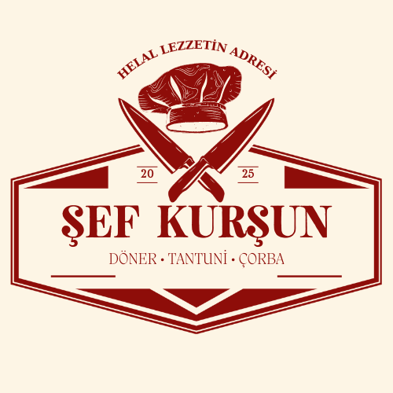

Döner • Tantuni • Ev Yemekleri
Özel soslu taze tavuk döner, çıtır lavaşta.
Bol soslu, özel baharatlı ve patates kızartmalı Antakya usulü dürüm keyfi.
Tereyağlı pirinç pilavının üzerinde nar gibi kızarmış nefis tavuk döner, patates kızartması ve salata ile.
Pamuk gibi pişmiş tavuk eti, sumaklı soğan, domates ve taze maydanozla.
Dilimlenmiş enfes tavuk tantuni dürümü, süzme yoğurt ve kızgın tereyağ sosuyla.
Geleneksel sacda pişen et, soğan ve domatesle incecik lavaşta.
Sıcak sacdan tabağa; yoğurt yatağında tereyağlı ve soslu et tantuni şöleni.
Günün özel hazırlanan ev yemeği tabağı.
Süzme esnaf usulü, tereyağı gezdirilmiş sıcacık şifa kaynağı.
Bol lifli tavuk eti ve hafif acılı, kıvamlı özel un çorbası.
Sarımsak, sirke ve limon sosuyla harmanlanmış, bol etli geleneksel paça. Not: Sadece Pazartesi günleri hazırlanmaktadır.
Lokum gibi pişmiş, etli ve kıvamlı tam bir anne yemeği.
Etli, eski usul kıvamında pişmiş iri kuru fasulye.
Zeytinyağlı taze ve hafif domates soslu taze fasulye.
Tane tane dökülen, bol tereyağlı klasik pirinç pilavı.
Yemeklerin yanına buz gibi, taze ve kıvamlı kase yoğurt.
Taze salatalık, nane ve zeytinyağı ile buluşan serinletici lezzet.
Taze mevsim yeşillikleri ve domates ile hazırlanan söğüş salata.
Sıcacık, taze pişmiş sade bazlama ekmeği.
Baharatlı patates harcıyla hazırlanan sıcacık el açması sıkma.
Sıcağıyla eriyen bol kaşar peynirli nefis lezzet.
Geleneksel çökelek peyniri ve yeşillik dolgulu hafif sıkma.
Yöresel lezzetli deri peyniriyle hazırlanan özel sıkma.
Baharatlı ve patatesli el açması sac böreği.
Taze ıspanak ve soğan harçlı, sacda pişmiş çıtır börek.
Hafif ve lezzetli çökelek peynirli sac böreği.
Eriyen bol kaşar peynirli el açması sac böreği.
Yöresel deri peynirinin eşsiz aromasıyla hazırlanan börek.
Ispanak ve eriyen kaşar peynirinin mükemmel uyumu.
Baharatlı patates ve eriyen kaşar peynirli lezzet ikilisi.